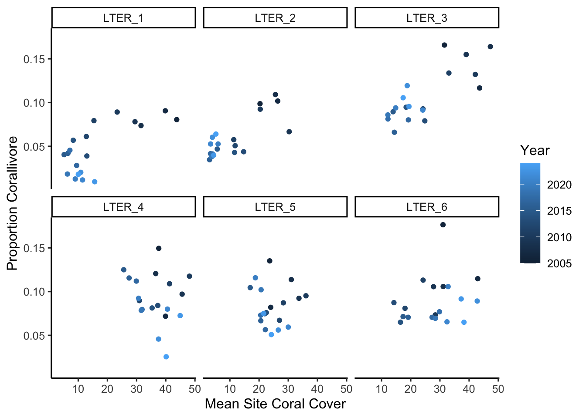
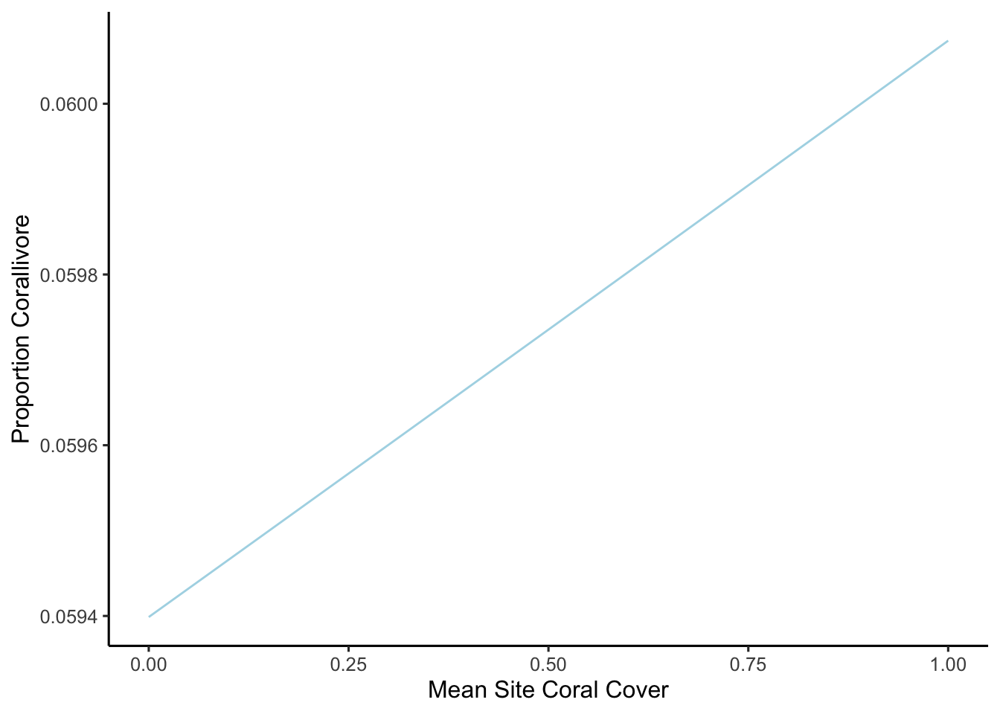

library(tidyverse)
library(here)
library(janitor)
library(dplyr)
library(patchwork)
library(betareg)
library(glmmTMB)
theme_set(theme_classic(12))
set.seed(42)knitr::include_graphics("corallivore.png")
Is there a relationship between decreasing coral cover and corallivore abundance in Backreef sites around Mo’orea, French Polynesia?
Coral reefs around the islands of Mo’orea are threatened by a variety of stressors such as cyclone activity and the outbreak of predatory sea stars (Acanthaster planci) that feed on coral tissue. As a response to these stressors, many locations around the island have undergone phase shifts in their benthic composition that involves the transformation of coral dominated communities to macroalgae dominated communities. In particular, the backreefs have been heavily transformed by the presence of Turbinaria, a well defended and persistent algae. I was interested if the resulting fish communities have changed as a result of this, particularly the abundance of Corallivores which feed primarily on scleractinian corals.
The following analyses involve two datasets, both from the Mo’orea Coral Reef Long Term Ecological Research.
fish : describe the species abundance and estimated size distributions (total body length to the greatest precision possible) of fishes surveyed as part of MCR LTER’s annual reef fish monitoring program. This dataset will be filtered to Backreef sites and for the fine trophic level of Corallivore.
coral_cover : describe the percentage cover of all stony corals (Scleractinia, pooled among genera) and other major groups analyzed from 0.5 x 0.5 m photographic quadrats at the Backreef habitat at the Moorea Coral Reef LTER, French Polynesia.
# Read in fish and coral data
fish <- read_csv(here("blogposts", "corallivores", "data", "MCR_LTER_Annual_Fish_Survey_20250324.csv")) |>
janitor::clean_names()
coral_cover <- read_csv(here("blogposts", "corallivores", "data", "MCR_LTER_Coral_Cover_Backreef_Long_20250429.csv")) |>
janitor::clean_names()Change in Backreef Fish Community through time and change in Corallivore abundance through time
fish_through_years <- fish |>
group_by(year, fine_trophic) |>
filter(!fine_trophic %in% c("Sediment Sucker", "Planktivore_exclusively", "na")) |>
summarise(n = n()) |>
mutate(total_number = n)`summarise()` has grouped output by 'year'. You can override using the
`.groups` argument.groups_through_years_plot <- ggplot(fish_through_years,
aes(x = year,
y = total_number,
color = fine_trophic)) +
geom_line() +
labs(x = "Year",
y = "Total Number of Fish",
title = "Change in Backreef Fish Abundance (2006-2025)",
color = "Fish Type")
corallivores_through_years <- fish |>
group_by(year) |>
filter(habitat == "Backreef") |>
filter(fine_trophic == "Corallivore") |>
summarise(n = n()) |>
mutate(total_number = n)
corallivore_plot <- ggplot(corallivores_through_years,
aes(x = year,
y = total_number)) +
geom_line(color = "lightblue") +
labs(x = "Year",
y = "Total Number of Fish",
title = "Change in Backreef Corallivore Abundance (2006-2025)")groups_through_years_plot 
corallivore_plot
Total Counts of each trophic level in 2006 and 2024.
Corallivores dropped from 3rd most abundant group in first year of survey to 6th most abundant group in the last sampling year.
fish_2006 <- fish |>
group_by(fine_trophic, habitat) |>
filter(fine_trophic != "na")|>
filter(year == "2006") |>
filter(habitat == "Backreef") |>
summarise(n = n()) |>
mutate(total_number = n) |>
arrange(desc(total_number))
fish_2006_plot <- ggplot(fish_2006, aes(x = total_number,
y = reorder(fine_trophic, +total_number),
fill = fine_trophic)) +
geom_col() +
ylab(" ") +
xlab("Count") +
labs(title = " 2006 Backreef Fish Abundance by Group",
x = "Count") +
theme(legend.position = "none")fish_2024 <- fish |>
group_by(fine_trophic, habitat) |>
filter(fine_trophic != "na")|>
filter(year == "2024") |>
filter(habitat == "Backreef") |>
summarise(n = n()) |>
mutate(total_number = n) |>
arrange(desc(total_number))
fish_2024_plot <- ggplot(fish_2024, aes(x = total_number,
y = reorder(fine_trophic, +total_number),
fill = fine_trophic)) +
geom_col() +
ylab(" ") +
xlab("Count") +
labs(title = " 2024 Backreef Fish Abundance by Group",
x = "Count") +
theme(legend.position = "none")fish_2006_plot
fish_2024_plot
knitr::include_graphics("DAG.png")
The three predictor variables that will be included in this model are LTER site, year, and mean coral cover of transects within a site. The site and year should determine the coral cover which in turn should determine the response; proportion corallivore in the fish community.
Statistical model
\[ \begin{align} \text{Proportion Corallivores} &\sim Beta(\mu, \phi) \\ logit(\mu) &= \beta_0 + \beta_1 \text{Mean Site Coral Cover} + \beta_2 \text{Site} + \beta_3 \text{Year} \end{align} \] The response variable is a proportion between 0 and 1. We want to investigate how that changes with the predictor variables.
μ: the mean of beta distribution. ϕ: precision parameter. The larger the ϕ, less variance in distribution. The inverse is true: a low ϕ, yields more variance in distribution.
Because μ needs to be between 0 and 1, a transformation using the logit link is necessary to convert values to that range.
To summarise, as the predictor changes, the expected proportion will change at a constant rate between 0 and 1.
Simulate data according to model assumptions
This part im very unsure about.
# coral_cover <- 24.14776
# logit_mu <- 74.182211 + (0.012021 * coral_cover)
# phi <- 116.34 # this is shape1+shape2
# mu <- 1 / (1 + exp(-logit_mu)) # this is shape1/(shape1+shape2)
# shape1 <- mu * phi
# shape2 <- phi - shape1Model fit to simulated data recovers the paramters
Inference
Ha: There is a positive effect between mean site coral cover and proportion corallivore in the backreef fish community.
Ho : There is no effect of mean site coral cover on proportion corallivore in the backreef fish community.
First, processing data to create a dataframe which contains the corallivore proportion at each LTER backreef site each year, and the mean coral cover of monitored transects at each LTER backreed site, each year.
corallivore <- fish |>
filter(habitat == "Backreef") |>
group_by(year, site ) |>
summarise(proportion_corallivore = mean(fine_trophic == "Corallivore", na.rm = TRUE)) coral_cover <- coral_cover |>
filter(benthic_category == "coral") |>
group_by(year, site) |>
summarise(mean_site_coral_cover = mean(percent_cover)) `summarise()` has grouped output by 'year'. You can override using the
`.groups` argument.Combine both clean data frames
full_data_frame <- left_join(coral_cover, corallivore, join_by(year, site))
full_data_frame <- full_data_frame |>
mutate(site_number = (str_sub(site, 6))) |>
mutate(site_number = as.numeric(site_number))Plot relationship
ggplot(full_data_frame,
aes(x = mean_site_coral_cover,
y = proportion_corallivore,
color = year)) +
geom_point() +
facet_wrap("site") +
labs(x = "Mean Site Coral Cover",
y = "Proportion Corallivore",
color = "Year")
** Need to decide to use betareg() or glmmTMB()** - Having issues generating CI. Manually retrieve SE values? Only possible with glmmTMB() so far.
# Fit beta regression model to data using betareg()
model <- betareg(
proportion_corallivore ~ mean_site_coral_cover + site_number + year,
data = full_data_frame,
link = "logit"
)
summary(model)
Call:
betareg(formula = proportion_corallivore ~ mean_site_coral_cover + site_number +
year, data = full_data_frame, link = "logit")
Quantile residuals:
Min 1Q Median 3Q Max
-2.5642 -0.5924 -0.0735 0.6719 2.5193
Coefficients (mean model with logit link):
Estimate Std. Error z value Pr(>|z|)
(Intercept) 74.182211 12.562101 5.905 3.52e-09 ***
mean_site_coral_cover 0.012021 0.003164 3.799 0.000145 ***
site_number 0.083581 0.020400 4.097 4.18e-05 ***
year -0.038341 0.006229 -6.155 7.49e-10 ***
Phi coefficients (precision model with identity link):
Estimate Std. Error z value Pr(>|z|)
(phi) 116.34 15.48 7.517 5.59e-14 ***
---
Signif. codes: 0 '***' 0.001 '**' 0.01 '*' 0.05 '.' 0.1 ' ' 1
Type of estimator: ML (maximum likelihood)
Log-likelihood: 265.9 on 5 Df
Pseudo R-squared: 0.4993
Number of iterations: 56 (BFGS) + 6 (Fisher scoring) # Generate predicted values of corallivore proportion using model
pred_grid <- expand_grid(mean_site_coral_cover = seq(0,1, by = 0.01)) |>
mutate(site_number = mean(full_data_frame$site_number, na.rm = TRUE),
year = mean(full_data_frame$year, na.rm = TRUE))
pred_grid <- pred_grid |>
mutate(proportion_corallivore = predict(object = model,
newdata = pred_grid,
type = "response"))# # Fit beta regression model to data using glmmTMB()
corallivore_model <- glmmTMB(proportion_corallivore ~ mean_site_coral_cover + site_number + year,
data = full_data_frame,
family = beta_family(link = "logit"))
corallivore_model_summary <- summary(corallivore_model)
corallivore_model_summary$coefficients$cond Estimate Std. Error z value Pr(>|z|)
(Intercept) 74.18221106 12.403198687 5.980894 2.219169e-09
mean_site_coral_cover 0.01202105 0.003101883 3.875402 1.064487e-04
site_number 0.08358104 0.019548359 4.275604 1.906199e-05
year -0.03834053 0.006149259 -6.234984 4.518252e-10
attr(,"ddf")
[1] "asymptotic"# Generate Confidence Interval
B0 = corallivore_model_summary$coefficients$cond[1]
B1 = corallivore_model_summary$coefficients$cond[2]
B2 = corallivore_model_summary$coefficients$cond[3]
B3 = corallivore_model_summary$coefficients$cond[4]
se_intercept <- corallivore_model_summary$coefficients$cond[5]
se_mean_site_coral_cover <- corallivore_model_summary$coefficients$cond[6]
se_site_number<- corallivore_model_summary$coefficients$cond[7]
se_year <- corallivore_model_summary$coefficients$cond[8]
B0_upper= B0+1.96*se_intercept
B0_lower=B0-1.96*se_intercept
B1_upper= B1+1.96*se_mean_site_coral_cover
B1_lower=B1-1.96*se_mean_site_coral_cover
B2_upper= B2+1.96*se_site_number
B2_lower=B2+1.96*se_site_number
B3_upper= B3+1.96*se_year
B3_lower=B3+1.96*se_year # Plot betaregression with CIs - pending
ggplot(pred_grid,
aes(x = mean_site_coral_cover,
y = proportion_corallivore)) +
geom_line(color = "lightblue") +
labs(x = "Mean Site Coral Cover",
y = "Proportion Corallivore")
A hypothesis is tested and the evidence is interpreted
Citation
BibTeX citation:
@online{sandoval,
author = {Sandoval, Joaquin},
title = {Corallivores},
url = {https://sandovaljoaquin.github.io/blogposts/corallivores},
langid = {en}
}
For attribution, please cite this work as:
Sandoval, Joaquin. n.d. “Corallivores.” https://sandovaljoaquin.github.io/blogposts/corallivores.